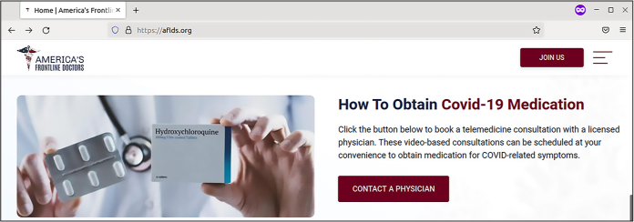
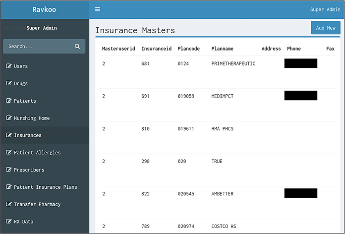
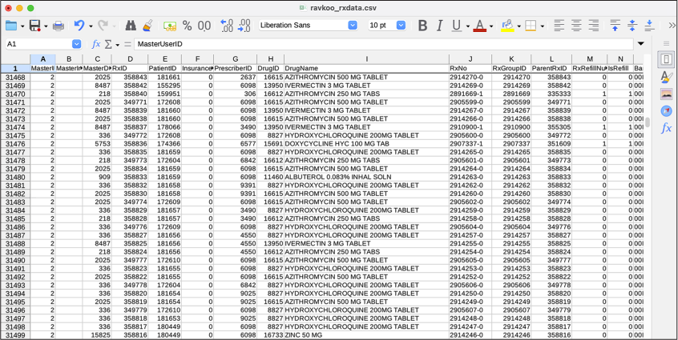
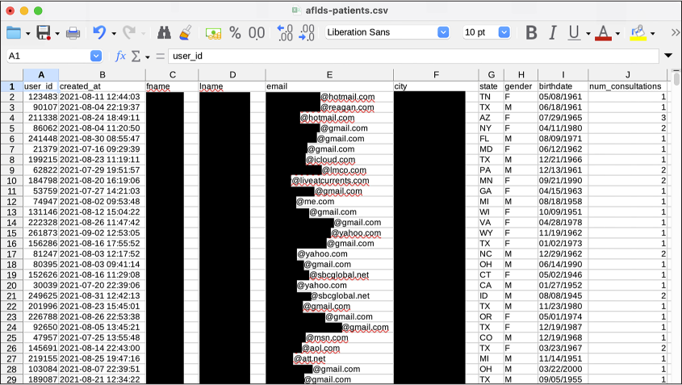
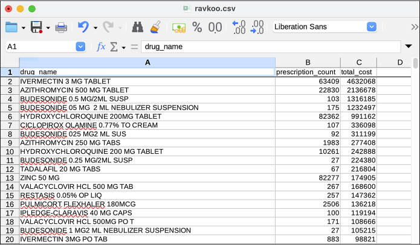
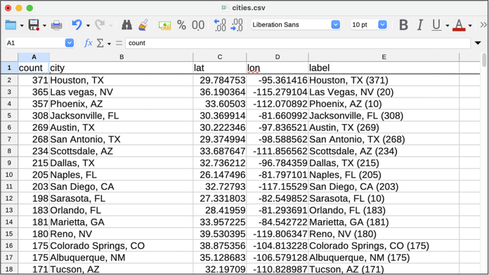
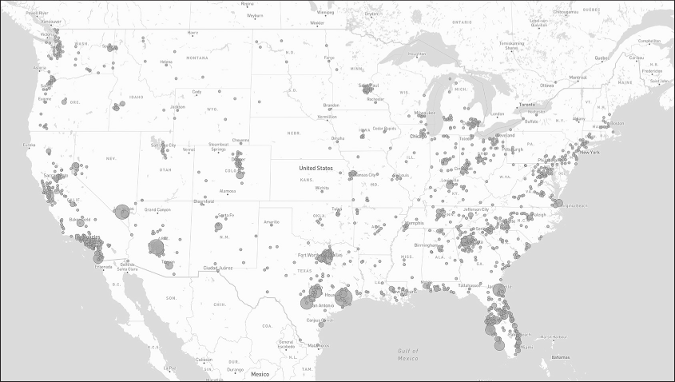
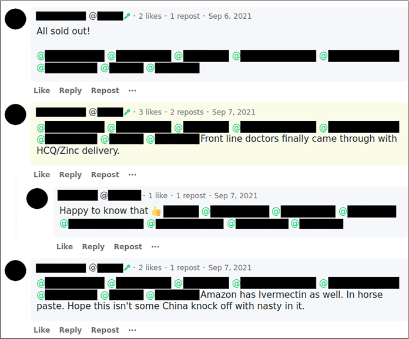

AFLDS, along with a small network of telehealth companies that my source told me were “hilariously easy” to hack, falsely claims to its sizable online audience that COVID-19 vaccines are dangerous and ineffective. It also promotes the drugs hydroxychloroquine (commonly used to treat malaria and lupus) and ivermectin (commonly used as a dewormer in livestock) as miracle cures for the virus. AFLDS creates high-quality anti-vaccine propaganda videos and distributes them to hundreds of thousands of followers across social media platforms.
The hacker sent me two datasets from two separate companies: Cadence Health, which ran the platform AFLDS used to give telehealth consultations to patients, and Ravkoo Pharmacy, which filled prescriptions for these drugs. After investigating over 1GB of JSON and CSV files cumulatively contained in the decompressed datasets, I discovered that AFLDS and its partners duped tens of thousands of people into seeking ineffective treatments and charged them at least $15 million—likely much more—for consultations and prescriptions for these drugs.
The revelations from my investigation led the US House Select Subcommittee on the Coronavirus Crisis, headed by Rep. James Clyburn (D-SC), to open an investigation into AFLDS and SpeakWithAnMD; technically, AFLDS worked directly with SpeakWithAnMD for providing telehealth consultations, and Cadence Health was SpeakWithAnMD’s vendor for managing the technology. Clyburn called these groups “predatory actors” that have been “touting misinformation and using it to market disproven and potentially hazardous coronavirus treatments.” The committee recommended that the Federal Trade Commission open its own investigation into these companies and later expanded its investigation to also cover Cadence Health.
Also in response to my reporting, other reporting on AFLDS, and pro-science activism in the medical community, the Medical Board of California (MBC) opened an investigation into Dr. Simone Gold, the founder of AFLDS, to determine if she should be stripped of her medical license. (At the time of writing, she is still licensed in California, as well as in Florida, where she has since moved.) AFLDS later accosted MBC president Kristina Lawson in a parking garage with cameras as part of an anti-science propaganda video it was producing.
Because the AFLDS dataset is full of medical records and PII, none of it is public, so you won’t be able to work with it yourself. Instead, I’ll describe the data, show redacted pieces of it, and show snippets of the Python code I wrote to make sense of it. If a similar dataset ever drops in your lap, the skills you’ve learned in this book so far and the strategies described in this chapter, along with perhaps some additional independent study, should enable you to investigate it just like I did.
The Origins of AFLDS¶
Before we get into the dataset, let’s take a look at how AFLDS was founded, including its ties to Trump’s 2020 reelection campaign and the conservative advocacy group the Tea Party Patriots, as well as exactly how AFLDS’s extremely profitable scheme succeeded in swindling vaccine skeptics into spending millions of dollars on phone consultations and bogus medicine for COVID-19.
On May 11, 2020, a senior staffer in Donald Trump’s reelection campaign and the Republican activist group CNP Action held a conference call. An audio recording of this call was leaked to Center for Media and Democracy, a progressive watchdog group, which gave a copy of the recording to the Associated Press (AP), which in turn reported on it. A key topic of discussion was reportedly finding “extremely pro-Trump doctors” to go on TV and defend Trump’s plan to rapidly reopen the economy, despite the more cautious safety guidance coming from the Centers for Disease Control and Prevention (CDC). Nancy Schulze, a Republican Party activist married to a former Republican member of Congress, said on the call that she had a list of doctors willing to defend Trump’s policies and that “those are the types of guys that we should want to get out on TV and radio to help push out the message.”
Dr. Gold was the “extremely pro-Trump doctor” they were looking for. During AP’s reporting of this conference call, a public relations firm distributed an open letter to Trump signed by over 400 doctors, calling the pandemic lockdown policies a “mass casualty event.” Dr. Gold’s signature was at the top of the letter, though she denied coordinating her efforts with the Trump campaign. This open letter was released after AP had sent requests for comment to individuals on the call and to Trump’s reelection campaign, but before it had published its article. This letter appears to be, at least in part, an attempt to preempt the article with a positive spin, something that might happen when you reach out for comment while doing adversarial journalism, as discussed in Chapter 1.
In June 2020, weeks after the conference call and the open letter, Gold founded an Arizona nonprofit called the Free Speech Foundation. The enterprise started with a million-dollar annual budget and fiscal sponsorship from the Tea Party Patriots Foundation, the major US conservative organization introduced in Chapter 2. AFLDS launched on July 27, 2020, as a Free Speech Foundation project. Gold, along with other doctors in white lab coats, held a press conference on the steps of the Supreme Court building where they falsely claimed that a cocktail of hydroxychloroquine, azithromycin, and zinc could cure COVID-19. The event was livestreamed on Breitbart. Then-President Trump shared videos of the press conference on Twitter, garnering millions of views before tech companies took them down for violating rules against pandemic misinformation.
SIMONE GOLD, INSURRECTIONIST¶
Simone Gold isn’t just an anti-vaxxer quack doctor getting rich off of fake cures for COVID-19; she’s also one of the insurrectionists who stormed the US Capitol on January 6, 2021. After Gold pleaded guilty to misdemeanor trespassing, she was sentenced to two months in prison, a year of supervised release, and a $9,500 fine.
In response to Gold’s arrest, AFLDS went on a fundraising spree, claiming that the charge against her was a politically motivated trampling of her free speech rights. The group raised more than $430,000 by the date of her sentencing, which the judge called “unseemly.” He also accused AFLDS of “mischaracterizing” her trial, “telling your supporters that this is a political prosecution of a law-abiding physician that’s designed to threaten and intimidate any American who dares to exercise their First Amendment rights.”
After Gold reported to prison in July 2022, her California medical license was automatically placed on “inactive” status, meaning she was barred from practicing medicine (though it was reactivated after she was released). While she served her sentence, AFLDS continued to fundraise off of her plight, including sending a newsletter that unironically cited an article from The Intercept about privacy issues in her prison.
John Strand, a former underwear model who hosted some of AFLDS’s short medical disinformation videos and who had become romantically involved with Gold as her employee, was also arrested during the Capitol riot. Unlike Gold, he did not plead guilty to misdemeanor trespassing, opting instead to try his luck at trial. He was found guilty of four misdemeanors and one felony (obstructing an official proceeding) and was sentenced in June 2023 to 32 months in prison and fined $10,000.
In early 2021, well into the pandemic, AFLDS set up a system on its website to sell $90 telemedicine consultations so people could get prescriptions for hydroxychloroquine—a drug that, at that point in the pandemic, had already been debunked as a treatment for COVID-19. On January 3, Gold told a packed, maskless church audience in Tampa, Florida, that AFLDS made “hydroxychloroquine available for the entire nation by going to our website. Then you can consult with a telemedicine doctor. And whether you have COVID, or you don’t have COVID, or you’re just worried about getting COVID, you can get yourself a prescription and they mail it to you.” She insisted, “The big fight wasn’t the virus, it was the fear.”
Figure 13-1 shows the AFLDS website advertising prescriptions for COVID-19 “medication.”
If one of AFLDS’s hundreds of thousands of followers watched one of the group’s anti-vaccine propaganda videos and decided that they needed ivermectin or hydroxychloroquine, first they would click the prominent Contact a Physician button on the AFLDS home page. This brought them to SpeakWithAnMD, the telehealth partner’s website. Clicking the button on that site to book a consultation sent the patient to a page to create an account at Cadence Health, a vendor of SpeakWithAnMD. Cadence Health provided the actual telehealth platform that SpeakWithAnMD used.

Figure 13-1: The home page on AFLDS’s website from March 4, 2022
The patient would then fill out a form answering medical questions; click through the disclaimer “As a potential patient, I acknowledge and understand that the Hydroxychloroquine (HCQ) and Ivermectin have been deemed ‘Highly Not Recommended’ by the WHO, FDA, CDC, and NIH”; and enter their credit card information to pay $90 for a consultation. In the next few days, the patient would receive a phone call from someone in AFLDS’s network of physicians, who would write them a prescription for the unproven drugs. ABC News paid the $90, got a call from someone who wrote them a prescription for ivermectin, and recorded the prescriber saying, “I don’t have any medical knowledge as far as the medicine, or even about COVID.”
At the time, the prescriptions were almost always processed through the online pharmacy Ravkoo. The patient would call Ravkoo, read their credit card number on the phone, and get the drugs mailed to their door. Sometimes they would be charged as much as $700 for ivermectin; Ravkoo didn’t accept health insurance for these sales.
When I started this investigation, I wasn’t familiar with any of these companies. It was obvious that AFLDS was in the business of misleading its followers about public health so it could sell ineffective alternatives for preventing and treating COVID-19. But I didn’t know how SpeakWithAnMD, Cadence Health, or Ravkoo fit into the scheme. Were they in on the AFLDS scam, or were they legitimate businesses that just happened to work with AFLDS?
Next, I’ll show you step-by-step how I unraveled this entire COVID-19 pandemic profiteering scheme, starting with a description of the datasets that my hacker source sent me.
The Cadence Health and Ravkoo Datasets¶
The 100MB of compressed data from my source included records for hundreds of thousands of patients, in two separate files. This section describes how I stored and extracted these sensitive documents, revisits some basic command line data analysis (as you learned about in Chapter 4), and describes some of the key types of data I discovered in the dataset.
Extracting the Data into an Encrypted File Container¶
Because patient records are more sensitive than other medium-sensitivity data, I took additional precautions to secure this dataset and my work with it. I created an encrypted file container, a 5GB encrypted file that I could unlock with a strong passphrase stored in my password manager. This is where I saved the original dataset, as well as all of my notes, code, and other files related to this investigation, giving me an extra layer of protection in case my computer is ever compromised. Even then, whoever accesses my data won’t be able to access the patient records without knowing the passphrase.
I used Linux software called zuluCrypt to manage my encrypted file container, but VeraCrypt, which you learned about in Chapter 1, would also have been a good option and is available on any operating system. ZuluCrypt is similar to VeraCrypt, but it’s slightly nicer to use and works only in Linux. I could also have used Disk Utility in macOS to create encrypted DMG files.
My source sent me two tarball files: hipaa_special.tar.zst (33MB) and horse_around_find_out.tar.zst (74MB). Here’s a listing of them:
micah@trapdoor data % ls -lh
total 215904
-rwx------ 1 micah staff 32M Sep 14 2021 hipaa_special.tar.zst
-rwx------ 1 micah staff 73M Sep 13 2021 horse_around_find_out.tar.zst
In Chapter 11, you worked with a similar
file format, .tar.gz, where files are compressed using the GZIP
algorithm. These .tar.zst files were compressed using a different
algorithm, Zstandard. Installing the Zstandard package allowed me to
uncompress this type of file using the command tar -xf filename. The -xf argument combines -x, which tells tar to extract the file, and -f, which indicates that the following
argument is the filename that you’re extracting. The tar program detects that this is a
Zstandard file and uses zstd
to uncompress it. Finally, because tar extracts a file into the current
working folder, I created new folders, changed to them, and then
extracted the data into that folder. For example, here’s how I extracted
hipaa_special.tar.zst:
micah@trapdoor data % mkdir hipaa_special
micah@trapdoor data % cd hipaa_special
micah@trapdoor hipaa_special % tar -xf ../hipaa_special.tar.zst
As you learned in Chapter 3, these commands make a new folder called hipaa_special, change to that folder, and then extract the hipaa_special.tar.zst file from the parent folder.
Likewise, the following commands change to the parent folder, make a new folder called horse_around_and_find out, change to that folder, and then extract horse_around_find_out.tar.zst into that folder:
micah@trapdoor hipaa_special % cd ..
micah@trapdoor data % mkdir horse_around_find_out
micah@trapdoor data % cd horse_around_find_out
micah@trapdoor horse_around_find_out % tar -xf ../horse_around_find_out.tar.zst
After extracting these folders, I did what I always do the first time I encounter any new dataset: start measuring it with command line tools.
Analyzing the Data with Command Line Tools¶
First, I wanted to know how much disk space these files took up and how many files were in each folder. I used the command line tricks described in Chapter 4 to figure this out:
micah@trapdoor data % gdu --apparent-size -sh hipaa_special
493M hipaa_special
micah@trapdoor data % find hipaa_special -type f | wc -l
281546
micah@trapdoor data % gdu --apparent-size -sh horse_around_find_out
691M horse_around_find_out
micah@trapdoor data % find horse_around_find_out -type f | wc -l
215
Because I ran these commands on my Mac, I used the gdu command from the coreutils Homebrew package to estimate disk
space (rather than the du
command for Linux). The find
command created a list of files in the given folder, and that list was
piped into the wc -l
command, which counted the number of files listed. My output showed that
the hipaa_special folder took 493MB of space and contained 281,546
files, and the horse_around _find_out folder took 691MB of space
and contained 215 files. Let’s look at one at a time.
Viewing the hipaa_special Folder¶
It was clear at this point that hipaa_special contained far more files than I could manually read. I ran the following command to view the first few lines of filenames in the hipaa_special folder listing, so I could get a feel for what was in there and start opening some of those files next:
micah@trapdoor data % ls -lh hipaa_special | head
My code piped the output of the ls command into the head command, which by default displays the
first 10 lines of input. This way, I didn’t need to watch hundreds of
thousands of filenames scroll by just to get a sense of the folder’s
contents.
My output showed that the folder contains small files with numeric filenames and no file extensions:
--snip--
-rw-r--r-- 1 micah staff 8.1K Sep 13 2021 100000
-rw-r--r-- 1 micah staff 1.3K Sep 13 2021 100001
-rw-r--r-- 1 micah staff 1.3K Sep 12 2021 100002
-rw-r--r-- 1 micah staff 1.4K Sep 13 2021 100003
-rw-r--r-- 1 micah staff 1.5K Sep 13 2021 100004
-rw-r--r-- 1 micah staff 1.5K Sep 13 2021 100005
-rw-r--r-- 1 micah staff 1.5K Sep 13 2021 100006
-rw-r--r-- 1 micah staff 1.3K Sep 13 2021 100007
-rw-r--r-- 1 micah staff 1.3K Sep 13 2021 100008
When I opened one of these files in VS Code, I could quickly see that it was a JSON file. Each of these files, I discovered, was a record for a different user in Cadence Health’s system. For example, Listing 13-1 shows a redacted version of the file 244273.
{
"result": true,
"provider": {
"provider_id": null,
"npi": null,
"spi": null,
"partner_id": null,
"user_id": 244273, ❶
--snip--
"fname": "redacted",
"lname": "redacted",
"phone": "redacted",
"work_phone": " ",
"work_phone_ext": " ",
"email": "redacted@hotmail.com",
"state": "CA",
"certified_states": [],
"gender": "F",
"fax": null,
"ssn": 999999999,
"birthdate": "redacted",
"addressLine1": "redacted",
"zipcode": "redacted",
"city": "redacted",
"avatar": "avatar\/default_avatar.png",
"id": 78410,
"partner": ",3,", ❷
"timezone": "America\/Los_Angeles",
"role_id": 3,
--snip--
"alcohol_type": null,
"alcohol_amount": null,
"current_physician": null,
"consultationNotes": [ ❸
{
"value": 179820,
"text": "09\/04\/2021 13:47:28", ❹
"note": "This visit was performed via telemedicine.\nThe patient confirmed knowledge of the limitations of the use of telemedicine were verbally confirmed by the provider.\nVerification of patient identity was established.\nVerbal consent was obtained for medical treatment obtained\n\nThe patient is being interviewed via phone Platform\n\nPatient has need for covid meds in regards to: ivermectin\nSymptoms onset date: 7 days\n\nOccupation:\nChronic Medical illnesses: denies heart lung or liver problems\
--snip--
be required.",
"practice": "covid19_treatment"
}
],
"internalNotes": []
}
}
Listing 13-1: An example JSON file from hipaa_special
I could see that the filename (244273) matched the patient’s user ID
❶. The record also includes
a reference to a partner ❷.
This value is in an odd format, but I quickly discovered that it’s a
comma-separated list of partner IDs with, for some reason, blank values
at the beginning and end of the list. I don’t know why Cadence Health
chose to represent which partners each patient belonged to as a string
rather than a JSON array, which would have been cleaner. Once I figured
out that they had made this choice, though, it was simple enough to work
around. I discovered that the vast majority of the patients have a value
of ,3, for partner, which, as you’ll see later in this
chapter, means they’re AFLDS patients.
The record also includes the patient’s name, email, address, date of
birth, other personal information, and detailed consultation notes. In
some of the patient records, the consultationNotes array ❸ is empty, but in this case, it lists details.
I assume that patients with empty consultation notes created an account
in the Cadence Health system but never paid the $90 and therefore
didn’t have any telehealth consultations. The patient from this file had
their $90 phone consultation on September 4, 2021, at 1:47 PM
❹.
This dataset includes patient records similar to that shown in Listing 13-1 for 281,000 patients.
My source told me that they had created their own account in the Cadence Health system while they were hacking it. As they used the website, they watched exactly which URLs their web browser loaded. When they noticed that the URL that returned their own patient record included their patient ID, they tried loading similar URLs with other IDs. Those URLs returned other users’ patient records. Therefore, my source simply wrote a script to download all 281,000 patient records and stored them in individual JSON files. The hipaa_special.tar.zst file contains the output of that script.
Viewing the horse_around_find_out Folder¶
The horse_around_find_out folder is much smaller and easier to deal
with. I ran the following command to find out what files it contained
(this folder contains a small enough number of files that there was no
reason to pipe it into head):
micah@trapdoor data % ls -lh horse_around_find_out
My output showed that the files in this folder are mostly JSON files from Cadence Health and CSVs from the Ravkoo pharmacy site, as well as a few other files:
--snip--
-rw-r--r-- 1 micah staff 387M Sep 12 2021 cadence_allpatients_all.json
-rw-r--r-- 1 micah staff 13K Sep 12 2021 cadence_allpharmacies_all.json
-rw-r--r-- 1 micah staff 317K Sep 12 2021 cadence_allproviders_all.json
-rw-r--r-- 1 micah staff 3.9K Sep 12 2021 cadence_allteams_all.json
-rw-r--r-- 1 micah staff 15K Sep 13 2021 cadence_api.txt
-rw-r--r-- 1 micah staff 103M Sep 12 2021 cadence_contacts_all.json
-rw-r--r-- 1 micah staff 1.0M Sep 12 2021 cadence_getPrescriptionPad_all.json
-rw-r--r-- 1 micah staff 983K Sep 11 2021 cadence_health_partners.json
drwxr-xr-x 202 micah staff 6.3K Sep 12 2021 cadence_js
-rw-r--r-- 1 micah staff 238K Sep 12 2021 cadence_providers_2.json
-rw-r--r-- 1 micah staff 321K Sep 12 2021 ravkoo_contact.csv
-rw-r--r-- 1 micah staff 1.8M Sep 12 2021 ravkoo_drugs.csv
-rw-r--r-- 1 micah staff 51K Sep 12 2021 ravkoo_insurance.csv
-rw-r--r-- 1 micah staff 149M Sep 13 2021 ravkoo_rxdata.csv
-rw-r--r-- 1 micah staff 60K Sep 12 2021 ravkoo_screenshot.png
-rw-r--r-- 1 micah staff 361B Sep 12 2021 ravkoo_third_parties.csv
I started manually opening these files to see what they contain. The cadence_api.txt file appears to contain a few hundred lines of JavaScript code that lists URLs within the Cadence Health API, possibly used by the hacker to download the data. The cadence_js folder contains several inscrutable JavaScript files, probably the code that powered the Cadence Health website itself.
The folder also contains the file ravkoo_screenshot.png, a screenshot from Ravkoo’s Super Admin interface, shown in Figure 13-2. I never had access to the interface itself, just this screenshot. It appears that the links on the left represent tables of data from Ravkoo’s database, and the information on the right displays all of the data from a selected table.
My source told me that they had discovered a secret URL for this admin interface, though they didn’t explain exactly how they found it. Anyone could create an account on Ravkoo’s system, and as long as they were logged in, they could go to the URL for this interface. From there, they could click the table names in the list on the left to access all of Ravkoo’s data from their web browser. My source built the CSV files they sent me (ravkoo_contact .csv, ravkoo_drugs.csv, and so on) by scraping the data from the Ravkoo Super Admin interface, just as @donk_enby did to create the Parler dataset. (See Appendix B for more information on web scraping.)

Figure 13-2: A screenshot from the secret Ravkoo Super Admin interface
I could see that the horse_around_and_find_out folder contained mostly JSON and CSV files, but I needed to do more research to determine their significance.
Viewing the cadence_allpatients_all.json File¶
I started by looking at the largest file in horse_around_and_find_out, the 387MB cadence_allpatients_all.json file. This enormous JSON object lists information about every Cadence Health patient, including much of the same data listed in the hipaa_special patient records. Listing 13-2 shows a redacted section of the data from this file for a single patient.
{
"name": "redacted",
"id": 168692,
"fname": "redacted",
"mname": null,
"lname": "redacted",
"email": "redacted@gmail.com",
"password": "redacted_password_hash",
"ssn": 999999999,
"phone": "redacted",
"fax": null,
"birthdate": "redacted",
"gender": "F",
"maritalStatus": null,
"addressLine1": "redacted",
"addressLine2": null,
"zipcode": "redacted",
"city": "redacted",
"state": "NJ",
"language": null,
--snip--
"created_at": "2021-08-18 14:04:58",
"updated_at": "2021-08-18 14:04:58",
--snip--
Listing 13-2: An example JSON object describing a patient in cadence_allpatients_all.json
Many of these fields have a value of null, meaning they’re empty. The Cadence
Health software likely made it optional to collect this information, and
AFLDS chose not to do so for its patients. The value of the
ssn field (presumably for
Social Security number) is 999999999 in this example. All patients in this
JSON file have their SSN set either to this number or to null, so it appears that this dataset
doesn’t include real SSNs. The cadence_allpatients_all.json file
also included each user’s password hash. Someone with all these password
hashes could potentially recover the original passwords for users
without strong passwords. The value of created_at appears to be the timestamp for when
this patient record was created—in other words, when this person
created their account.
After reading through several patient records in my text editor, I had a decent understanding of the type of data in this file, so I moved on to examining the smaller files.
Viewing the cadence_health_partners.json File¶
The cadence_health_partners.json file contains a JSON object with a list of 17 of Cadence’s partners, such as America’s Frontline Doctors, SpeakWithAnMD, and Dr. Zelenko. Listing 13-3 shows a redacted example of the AFLDS partner from that file.
{
"id": 3,
"name": "America's Frontline Doctors",
--snip--
"practices": "covid19,followupvisit",
--snip--
"one_merchant_security_key": "redacted",
"stripe_publishable_key": "dev+admin@cadencehealth.us",
"stripe_secret_key": "redacted",
"virtual_visit_price": {
"covid19": "90.00",
"followupvisit": "59.99"
},
--snip--
Listing 13-3: An example JSON object describing a partner in cadence_health_partners.json
Each partner has unique id
and name fields, along with
many others that describe the partner’s settings. The first lines of
this JSON object show that AFLDS’s id is 3. The practices field is a string containing a
comma-separated list of telehealth consultation types that this partner
offers (covid19 and
followupvisit, in this
case). This JSON object includes secret tokens for payment processors in
the lines with fields for one_merchant _security_key and stripe_secret_key, which I’ve redacted. The
virtual_visit _price field
is a JSON object containing other fields for each type of practice this
partner offers and, in this case, shows that AFLDS charges $90 for
COVID-19 visits and $59.99 for follow-up visits.
After reviewing cadence_health_partners.json and the patient data in
the hipaa_special folder, I noticed a relationship between the two.
Each partner’s JSON object has an id, and each patient has a
partner field. Listing 13-3 shows that AFLDS’s partner id is 3, indicating that the patient in Listing 13-1 with a partner value of ,3, was an AFLDS patient.
The ravkoo_rxdata.csv File¶
Of the six Ravkoo files, I found that ravkoo_rxdata.csv was by far the biggest. Figure 13-3 shows a portion of the data in this spreadsheet.

Figure 13-3: Viewing ravkoo_rxdata.csv in LibreOffice Calc format
This 149MB CSV spreadsheet contained 340,000 rows of data, each
representing a prescription filled. Each prescription included the name
and dosage of the drug, usage instructions, information about refills,
the date it was filled, a Remarks column (where many of the rows list
AMERICAS FRONT LINE DOCTORS—ENCORE), and other information.
After a cursory review of ravkoo_rxdata.csv, it was clear that it might contain revelations about how much money AFLDS and the companies it worked with charged for bogus COVID-19 health care. However, its current format would make it difficult to work with. I needed to transform the data in order to more easily make sense of it.
Creating a Single Spreadsheet of Patients¶
I wanted to separate the AFLDS patients who had paid $90 for phone consultations from the total list of patients, many of whom had never paid, so I could get a clearer idea of the scale of AFLDS’s scam. For each of these paying patients, I wanted to find their name, gender, birth date, the date they created their Cadence Health account, and the number of telehealth consultations they had.
The cadence_allpatients_all.json file contained information about
all of the patients, including the previously discussed
created_at timestamp.
However, it didn’t include the consultation notes, and I needed those to
determine how many consultations the patient actually had. Meanwhile,
the 281,000 JSON files in the hipaa_special folder had information
about all of the patients, including consultation notes, but it didn’t
have the created_at
timestamp.
I decided to write a Python script to comb through the cadence_allpatients_all.json file and all the files in the hipaa_special folder, pull out the information I was looking for, and save it all in a single CSV. Here’s the Python code for my script (you can also find a copy in the book’s GitHub repo at https://github.com/micahflee/hacks-leaks-and-revelations/blob/main/chapter-13/create-aflds-patients-csv.py):
import json
import csv
import os
# Turn a JSON file into a Python dict or list
def data_from_json(filename):
with open(filename) as f:
return json.loads(f.read())
# Export a CSV full of AFLDS patients
def main():
# Load patient data from cadence_allpatients_all.json
patients_data = data_from_json(
"data/horse_around_find_out/cadence_allpatients_all.json"
)
# Keep track of the created_at timestamps for each patient's id
patient_ids_to_created_at = {}
for patient in patients_data["patients"]:
patient_ids_to_created_at[patient["id"]] = patient["created_at"]
# Start the list of AFLDS patients that have had at least one consultation
patient_rows = []
# Loop through every file in the hipaa_special folder
for patient_id in os.listdir("data/hipaa_special"):
# Load the patient data
data = data_from_json(os.path.join("data/hipaa_special", patient_id))
# Some of the patient records are empty. This skips them
if not data["result"]:
continue
# Make sure AFLDS (id 3) is in the list of partners
partner_ids = data["provider"]["partner"].split(",")
if "3" in partner_ids:
# Count how many consultations this patient has
num_consultations = len(data["provider"]["consultationNotes"])
# If they have had more than one, add them to the list
if num_consultations > 0:
patient_rows.append(
{
"user_id": data["provider"]["user_id"],
"created_at": patient_ids_to_created_at[
data["provider"]["user_id"]
],
"fname": data["provider"]["fname"],
"lname": data["provider"]["lname"],
"email": data["provider"]["email"],
"city": data["provider"]["city"],
"state": data["provider"]["state"],
"gender": data["provider"]["gender"],
"birthdate": data["provider"]["birthdate"],
"num_consultations": num_consultations,
}
)
# Write the CSV file
csv_filename = "aflds-patients.csv"
headers = [
"user_id",
"created_at",
"fname",
"lname",
"email",
"city",
"state",
"gender",
"birthdate",
"num_consultations",
]
with open(csv_filename, "w") as f:
writer = csv.DictWriter(f, headers)
writer.writeheader()
writer.writerows(patient_rows)
if __name__ == "__main__":
main()
You won’t be able to run this or any other script in this chapter without a copy of the private dataset, so I’ll summarize how it worked.
First, the script loaded cadence_allpatients_all.json as a Python
object. It then looped through each patient in that object, keeping
track of which user_id
mapped to which created_at
timestamp in a dictionary.
It created an empty list called
aflds_patients and then
looped through every filename in the hipaa_special folder, where each
file represents a different patient. For each filename, it loaded the
corresponding JSON file as a Python object representing a patient. If
the partner field included
the ID 3 (meaning that the record was associated with AFLDS), and if the
length of the consultationNotes field was greater than 0 (meaning
there was at least one consultation), then it added this patient to the
aflds_patients list, making
sure to include the patient’s created_at timestamp, too.
It opened a new CSV file, aflds-patients.csv, for writing, and then
wrote the aflds_patients
list as rows in the CSV file.
After working through the exercises in this book, you should have all
the skills you need to write your own similar scripts. This is true for
all of the scripts I wrote for this investigation, which you’ll see
throughout this chapter. For example, in Chapter 8, you learned about dictionaries and lists;
in Chapter 9, you learned how to use the
csv module to create your
own CSV spreadsheets; and in Chapter 11,
you learned how to load and work with data in JSON format. This script
incorporates all these techniques.
Running this script created a 6.4MB CSV file called aflds-patients.csv with 72,000 rows. Figure 13-4 shows a redacted view of this spreadsheet. As you can see, this data is significantly easier to make sense of compared to hundreds of thousands of small JSON files, and one enormous one.

Figure 13-4: A redacted view of aflds-patients.csv
This spreadsheet lists the 72,000 AFLDS patients who were referred to SpeakWithAnMD and actually bought a $90 consultation. If each patient paid $90, these consultations alone would have cost them, collectively, $6.4 million. Many of the patients had multiple consultations, so I estimate patients were charged $6.7 million from consultations alone. There’s no way of knowing just from this data how the money was distributed, but it was likely split between AFLDS, individual physicians in its network, and SpeakWithAnMD.
My source’s dataset included all of the patient data in Cadence Health’s
database. When I sorted the spreadsheet on the created_at column, which includes the dates each
patient created their Cadence account, I could see that the earliest
patients made their accounts on July 16, 2021, and the latest patients
created theirs on September 12, 2021, when my source hacked Cadence
Health. While only 72,000 patients paid for $90 consultations, I had
data for an additional 180,000 AFLDS patients who created Cadence
accounts but never had a consultation, meaning that 90 percent of the
281,000 patients in the Cadence Health database during this time span
were referred by AFLDS.
While AFLDS had been selling $90 consultations since January 2021, Roque Espinal, Cadence Health’s CEO, confirmed to me that his service for SpeakWithAnMD launched on July 16. Since this is the date of the earliest patient data I have, this means that my source collected records for all of Cadence’s patients. My source’s data shows that in the two-month period between July and September, AFLDS charged its patients an average of $100,000 a day from $90 consultations alone. If AFLDS brought in that much each day during the first half of the year as well, it would have brought in an additional $18 million in revenue. Again, this is just from selling consultations; it doesn’t include the cost of the prescription drugs.
At this point in my investigation, it was clear that AFLDS was spreading medical disinformation, and it seemed evident that SpeakWithAnMD and Ravkoo were at least aware of this and were profiting from it as well. However, I wasn’t sure if Cadence Health, which provided a service to SpeakWithAnMD, had realized what its service was being used for. But before exploring that further, I decided to switch gears and start looking at Ravkoo’s drug prescription data.
Calculating Revenue from Prescriptions Filled by Ravkoo¶
The ravkoo_rxdata.csv spreadsheet introduced earlier has 340,000
rows, each representing a prescription that was filled. It includes a
DrugName column with values
like IVERMECTIN 3 MG TABLET,
a cost column with the price
of that prescription, and a Fill_Date column with the date that the
prescription was filled.
By sorting the spreadsheet by Fill_Date, I could see that the Ravkoo pharmacy
filled the first prescription on November 27, 2020, and the last ones
were filled on August 24, 2021. The SpeakWithAnMD data covers a
two-month period, but the Ravkoo data covers a nine-month period. That
is, my dataset contained two months’ worth of
patient records, but nine months’ worth of prescription records. In this
section I describe the Python code I wrote to gain a better
understanding of what drugs Ravkoo sold and how much of them related to
quack cures for COVID-19.
Finding the Price and Quantity of Drugs Sold¶
To find out how much money Ravkoo charged patients for each specific drug, I wrote another script, shown in Listing 13-4 (you can also find a copy of it at https://github.com/micahflee/hacks-leaks-and-revelations/blob/main/chapter-13/create-ravkoo-csv.py).
import csv
# Export a CSV that adds up prescriptions and their costs for each drug
def main():
# A dictionary that maps drug names to another dictionary containing the
# prescription count and total cost for that drug
drugs = {}
# Add up the number of prescriptions and total cost for all drugs, to display
# at the end
prescription_count = 0
total_cost = 0
# Loop through ravkoo_rxdata.csv, and count prescriptions and costs
with open("data/horse_around_find_out/ravkoo_rxdata.csv") as f:
reader = csv.DictReader(f)
for row in reader:
if row["DrugName"] not in drugs:
drugs[row["DrugName"]] = {"prescription_count": 0, "total_cost": 0}
# Count prescriptions and cost for this drug
drugs[row["DrugName"]]["prescription_count"] += 1
drugs[row["DrugName"]]["total_cost"] += float(row["Cost"])
# Count prescriptions and cost for _all_ drugs
prescription_count += 1
total_cost += float(row["Cost"])
# Write the CSV file
headers = [
"drug_name",
"prescription_count",
"total_cost",
]
csv_filename = "ravkoo.csv"
with open(csv_filename, "w") as f:
writer = csv.DictWriter(f, headers)
writer.writeheader()
for drug_name in drugs:
writer.writerow(
{
"drug_name": drug_name,
"prescription_count": drugs[drug_name]["prescription_count"],
"total_cost": int(drugs[drug_name]["total_cost"]),
}
)
print(f"Number of prescriptions: {prescription_count:,}")
print(f"Total cost: ${int(total_cost):,}")
if __name__ == "__main__":
main()
Listing 13-4: The Python script create-ravkoo-csv.py, which adds up Ravkoo prescriptions and drug costs and exports a CSV of the results
First this script created an empty dictionary called drugs, which mapped drug names to another
dictionary containing prescription_count and total_cost values. It then loaded
ravkoo_rxdata.csv and looped through its rows. For each row, if the
DrugName wasn’t in the
drugs dictionary yet, the
script added it, then incremented the drug’s prescription count by 1 and
added the Cost value to that
drug’s total cost. It saved all of the data in drugs into a CSV called ravkoo.csv.
Finally, the script counted up the total number of prescriptions and the
total cost for all drugs sold to all patients and displayed it in the
terminal.
Here’s the output I got when I ran the script:
micah@trapdoor AFLDS % python3 create-ravkoo-csv.py
Number of prescriptions: 340,000
Total cost: $15,119,473
My output showed that patients paid over $15 million to Ravkoo for all the prescriptions in the hacked data. However, many of these prescriptions might not have anything to do with AFLDS or bogus COVID-19 cures.
The resulting CSV file, ravkoo.csv, contained 1,552 rows, the number
of unique DrugName values in
the original ravkoo_rxdata.csv. Figure
13-5 shows this spreadsheet, sorted
descending by total_cost, to
show which drugs cost patients the most money.
How much of this revenue was from drugs that AFLDS pushed on its
followers? The drug that cumulatively cost patients the most was
IVERMECTIN 3 MG TABLET,
which was prescribed 63,409 times, at a total cost of $4.6 million.
Ivermectin is used primarily to treat parasites in livestock, but it’s
also occasionally used to treat scabies and lice in humans. I didn’t
know for sure that all of these ivermectin sales were directly from
AFLDS, but it was suspicious that ivermectin was bringing in so much
money during the COVID-19 pandemic, when disinformation about its
efficacy was rampant.
Another row had the drug_name of IVERMECTIN 3MG PO TAB (the same dose of ivermectin, just
with a slightly different name DrugName value from ravkoo_rxdata.csv) that
cost 883 patients another $98,900. Other drugs like hydroxychloroquine
and azithromycin had the same problem: there were different
DrugName values that
actually represented the same drug. If I wanted to
know the total revenue from each individual drug, I would have to
combine all of the ivermectin prescriptions into one row and do the same
with the other drugs.

Figure 13-5: Viewing ravkoo.csv in LibreOffice Calc
Categorizing Prescription Data by Drug¶
Because I was investigating AFLDS, I was most interested in the drugs that the group promotes: ivermectin, hydroxychloroquine, and a few others. In addition to ivermectin, AFLDS promotes the Zelenko protocol, named after Dr. Vladimir Zelenko, the American doctor who, at the start of the pandemic in March 2020, claimed (without evidence) that he had successfully treated hundreds of COVID-19 patients using a combination of hydroxychloroquine, azithromycin, and zinc sulfate. (The AFLDS website on treatment options also lists vitamin C as part of the Zelenko protocol.) Zelenko also spread other medical disinformation, claiming, for example, that more children die from COVID-19 vaccines than from the virus itself. Then-President Trump publicly lauded Zelenko’s work, saying that he himself took hydroxychloroquine to treat COVID-19.
I wanted to see how much of Ravkoo’s business consisted of selling these
drugs. To do this, I’d have to reorganize the data. I needed to create a
similar spreadsheet, but instead of having a column for the
DrugName lifted directly
from the hacked data, I wanted that column to be a category of
prescriptions. Once I had a straightforward spreadsheet that mapped
individual drugs to their revenue, I could visualize that data—for
example, in a pie chart.
The ravkoo.csv spreadsheet showed me the most commonly prescribed drugs. Based on the names of these drugs, I came up with a list of categories: Ivermectin, Hydroxychloroquine, Azithromycin, Zinc, Vitamin C, and Other. In other words, the most commonly prescribed drugs were exactly what AFLDS was promoting.
I then wrote another script very similar to the one in Listing 13-4, but with one additional step. For every row in the ravkoo_rxdata.csv spreadsheet, the script determined which of those categories the drug fit into and added up the number of prescriptions and cost for each category. It then saved all of this data as a CSV called ravkoo-categories.csv.
Here’s my Python script (you can also find it at https://github.com/micahflee/hacks-leaks-and-revelations/blob/main/chapter-13/create-ravkoo-categories-csv.py):
import csv
# Export a CSV that adds up prescriptions and their costs for each category of drug
def main():
# A dictionary that maps drug categories to another dictionary containing the
# prescription count and total cost for that drug category
drug_categories = {}
# Loop through ravkoo_rxdata.csv, and count prescriptions and costs
with open("data/horse_around_find_out/ravkoo_rxdata.csv") as f:
reader = csv.DictReader(f)
for row in reader:
if "ivermectin" in row["DrugName"].lower():
category = "Ivermectin"
elif "hydroxychloroquine" in row["DrugName"].lower():
category = "Hydroxychloroquine"
elif "azithromycin" in row["DrugName"].lower():
category = "Azithromycin"
elif "zinc" in row["DrugName"].lower():
category = "Zinc"
elif "vitamin c" in row["DrugName"].lower():
category = "Vitamin C"
else:
category = "Other"
if category not in drug_categories:
drug_categories[category] = {"prescription_count": 0, "total_cost": 0}
# Count prescriptions and cost for this drug category
drug_categories[category]["prescription_count"] += 1
drug_categories[category]["total_cost"] += float(row["Cost"])
# Write the CSV file
headers = [
"drug_category",
"prescription_count",
"total_cost",
]
csv_filename = "ravkoo-categories.csv"
with open(csv_filename, "w") as f:
writer = csv.DictWriter(f, headers)
writer.writeheader()
for category in drug_categories:
writer.writerow(
{
"drug_category": category,
"prescription_count": drug_categories[category][
"prescription_count"
],
"total_cost": int(drug_categories[category]["total_cost"]),
}
)
if __name__ == "__main__":
main()
After running this script, I ended up with a file called ravkoo-categories .csv. Table 13-1 shows the data from this spreadsheet, detailing Ravkoo’s prescription sales.
Table 13-1: Categories of Drugs Sold by Ravkoo
| Drug category | Prescription count | Total cost |
|---|---|---|
| Hydroxychloroquine | 92,646 | $1,234,727 |
| Zinc | 82,608 | $177,336 |
| Ivermectin | 64,300 | $4,734,163 |
| Other | 42,193 | $6,476,213 |
| Vitamin C | 31,281 | $52,712 |
| Azithromycin | 26,972 | $2,444,319 |
This data clearly revealed Ravkoo’s role in AFLDS’s scam: 87 percent of all prescriptions sold by Ravkoo are for fake COVID-19 treatments. Over a nine-month period, patients collectively paid $8.6 million to Ravkoo for snake oil that they were told would prevent or cure COVID-19. This is in addition to the roughly $6.7 million (and potentially many millions more) that patients paid SpeakWithAnMD for phone consultations. As far as I can tell, Ravkoo’s only role in the scheme was as a pharmacy, and it didn’t receive any money from the phone consultations. AFLDS also, at various times, worked with different pharmacies.
By the time The Intercept published this investigation into AFLDS, Ravkoo CEO Alpesh Patel told me that his company had already stopped doing business with SpeakWithAnMD. “The volume over there went up crazy, and we didn’t feel comfortable,” he said. “And we don’t have that much capacity to fill that many prescriptions.” Using OSINT, which you learned about in Chapter 1, I confirmed that Patel was telling the truth: after scouring the internet about AFLDS, including reading reporting from other journalists and pro-science activists on Twitter who were keeping track of the group, I discovered that AFLDS ran some Telegram channels, including one specifically for its patients. In this Telegram channel, I discovered that patients had posted messages about Ravkoo no longer working with SpeakWithAnMD or AFLDS.
A Deeper Look at the Cadence Health Patient Data¶
At this point, I knew that 72,000 AFLDS patients paid for $90 telehealth consultations and that 87 percent of Ravkoo’s prescriptions were for fake COVID-19 cures. I wanted to further understand the patient data, and there was still a lot more to dig into. Who were SpeakWithAnMD’s other partners besides AFLDS, and how much of the company’s business did they make up? And what could I learn about the AFLDS patients themselves? To answer these questions, I wrote more Python code.
Finding Cadence’s Partners¶
I wanted to know how much of SpeakWithAnMD’s business, and by extension Cadence Health’s business, came from AFLDS. The file cadence_health _partners.json includes a list of all the partners, so I wrote a Python script that counted the number of patients associated with each one, shown in Listing 13-5 (you can also find a copy at https://github.com/micahflee/hacks-leaks-and-revelations/blob/main/chapter-13/create-cadence-partners-csv.py).
import json
import csv
# Turn a JSON file into a Python dict or list
def data_from_json(filename):
with open(filename) as f:
return json.loads(f.read())
# Convert the comma-separated list of partners, like ",3,", into a Python list
# of partners, like ["America's Frontline Doctors"]
def get_partners(partner_lookup, patient):
partners = []
partner_ids = patient["partner"].split(",")
for partner_id in partner_ids:
if partner_id != "":
partners.append(partner_lookup[int(partner_id)])
return partners
# Export a CSV that lists Cadence partners
def main():
partner_rows = []
# Load the Cadence patient data
patients_data = data_from_json(
"data/horse_around_find_out/cadence_allpatients_all.json"
)
# Load the Cadence partners data
partners_data = data_from_json(
"data/horse_around_find_out/cadence_health_partners.json"
)
# Create a dictionary that maps a partner ID with its name
partner_lookup = {}
for partner in partners_data:
partner_lookup[partner["id"]] = partner["name"]
# Loop through all of the partners
for partner in partners_data:
# Count how many patients use this partner
patients = 0
for patient in patients_data["patients"]:
patient_partners = get_partners(partner_lookup, patient)
for patient_partner in patient_partners:
if patient_partner == partner["name"]:
patients += 1
# Add the partner's row
partner_rows.append(
{
"ID": partner["id"],
"Name": partner["name"],
"Domain": partner["domain"],
"Patients": patients,
}
)
# Write the CSV file
headers = ["ID", "Name", "Domain", "Patients"]
csv_filename = "cadence-partners.csv"
with open(csv_filename, "w") as f:
writer = csv.DictWriter(f, headers)
writer.writeheader()
writer.writerows(partner_rows)
if __name__ == "__main__":
main()
Listing 13-5: The create-cadence-partners-csv.py script returns the number of patients associated with each Cadence Health partner.
First, my script loaded cadence_allpatients_all.json and
cadence_health _partners.json as Python objects. It created an empty
list called partner_rows,
then looped through each partner. Inside this for loop was a nested for loop which, for each partner, looped
through each patient checking to see if that patient used that partner.
The script then added this information (the partner’s ID, name, and
domain, along with the tally of its associated patients) to the
partner_rows list. Finally,
it saved its findings in a CSV called cadence-partners.csv.
Table 13-2 shows the data from this spreadsheet, describing all of Cadence Health’s partners and how many patients they have.
Table 13-2: Cadence Health Partners
ID |
Name |
Domain |
Patients |
|---|---|---|---|
| 1 | Encore Telemedicine | encore.cadencehealth.us | 7 |
| 2 | SpeakWithAnMD | speakwithanmd.cadencehealth.us | 21,193 |
| 3 | America’s Frontline Doctors | aflds.cadencehealth.us | 255,266 |
| 4 | Corstet | corstet.cadencehealth.us | 1,604 |
| 5 | Dr. Zelenko | drzelenko.cadencehealth.us | 55 |
| 6 | Encore Demo | encoredemo.cadencehealth.us | 5 |
| 7 | Kim’s Pharmacy | kims.cadencehealth.us | 6 |
| 8 | TelMDFirst | telmdfirst.cadencehealth.us | 2,410 |
| 9 | Dr. Tsifutis | drtsifutis.cadencehealth.us | 301 |
| 10 | Dr. Immanuel | drimmanuel.cadencehealth.us | 3 |
| 11 | Dr. Palumbo | drpalumbo.cadencehealth.us | 29 |
| 12 | Dr. Boz | drboz.cadencehealth.us | 311 |
| 13 | Dr. Parker | drparker.cadencehealth.us | 409 |
| 14 | Dr. Johnson | drajohnson.cadencehealth.us | 3 |
| 15 | DEV | localhost:8080 | 1 |
| 16 | HablaConUnMD.com | hablaconunmd.cadencehealth.us | 0 |
| 17 | VirtuaFirst, PLLC | vf.cadencehealth.us | 0 |
Out of 281,603 patients, AFLDS referred 255,266 to SpeakWithAnMD and, by extension, Cadence Health. That means that 90 percent of the patients in Cadence’s database came from AFLDS.
I learned some additional interesting information from the partners list. The first partner listed, Encore Telemedicine, is SpeakForAnMD’s parent company. The fourth, Corstet, is owned by Jerome Corsi, who also owns Encore Telemedicine. Corsi is a former host of the conspiracy show InfoWars, a proponent of the racist “birtherism” conspiracy theory about former US president Barack Obama’s citizenship. He was also caught up in special counsel Robert Mueller’s investigation into Russian interference in the 2016 election. The list of partners also includes individual doctors, including Dr. Zelenko of “Zelenko protocol” fame and Dr. Stella Immanuel, one of the AFLDS doctors from the previously mentioned press conference in front of the Supreme Court building. After that event, she quickly earned viral fame for having claimed that the uterine disorder endometriosis is caused by women dreaming of sex with demons and witches.
This spreadsheet confirmed that the bulk of the Cadence data was related to AFLDS patients. I decided to dig even deeper into AFLDS patient data to see what revelations could be hiding there.
Searching for Patients by City¶
The aflds-patients.csv spreadsheet I created from the original
dataset, containing 72,000 rows of patients who were referred by AFLDS
and who had at least one consultation, includes columns for
city and state. This location data allowed me to
write another Python script to count how many patients were from each
city and look up GPS coordinates for that city so I could plot them on a
map.
In Chapter 11, you worked with GPS coordinates you found directly in Parler video metadata and plotted them on a map using Google Earth. In this case, however, I had only cities and states, so I needed to look up their GPS coordinates myself. I wrote a script to convert the names of the cities in the spreadsheet into GPS coordinates, a process called geocoding.
Listing 13-6 shows my Python script (you can also find a copy at https://github.com/micahflee/hacks-leaks-and-revelations/blob/main/chapter-13/create-cities-csv.py).
import csv
import json
import time
import httpx
geocode_api_key = "PUT_GEOCODE_API_KEY_HERE"
# Export a CSV that for each city lists its GPS coordinates and the number of patients there
def main():
# This dictionary maps names of cities (in format "City, State", like "New York, NY")
# to a dictionary with info about that city (number of patients, GPS coordinates)
cities = {}
# Count how many patients are in each city
with open("aflds-patients.csv") as f:
reader = csv.DictReader(f)
for row in reader:
city = f"{row['city']}, {row['state']}"
if city not in cities:
cities[city] = {"count": 0}
cities[city]["count"] += 1
print(f"Found patients in {len(cities):,} cities")
# Look up GPS coordinates for each city
for city in cities:
# Give each API request 3 tries, in case a connection fails
tries = 0
success = False
while not success:
try:
print(
f"Loading GPS coordinates for: {city} ({cities[city]['count']} patients)"
)
r = httpx.get(
"https://app.geocodeapi.io/api/v1/search",
params={
"apikey": geocode_api_key,
"text": city,
"size": 1,
"boundary.country": "US",
},
)
success = True
# The connection failed
except:
tries += 1
if tries == 3:
print("Failed, skipping")
print("Sleeping 2s and trying again")
time.sleep(2)
try:
data = json.loads(r.text)
if "features" in data and len(data["features"]) > 0:
cities[city]["lon"] = data["features"][0]["geometry"]["coordinates"][0]
cities[city]["lat"] = data["features"][0]["geometry"]["coordinates"][1]
except:
cities[city]["lon"] = None
cities[city]["lat"] = None
# Write the CSV file
headers = [
"count",
"city",
"lon",
"lat",
"label",
]
csv_filename = "cities.csv"
with open(csv_filename, "w") as f:
writer = csv.DictWriter(f, fieldnames=headers)
writer.writeheader()
for city in cities:
writer.writerow(
{
"count": cities[city]["count"],
"city": city,
"lon": cities[city]["lat"],
"lat": cities[city]["lon"],
"label": f"{city} ({cities[city]['count']})",
}
)
if __name__ == "__main__":
main()
Listing 13-6: The create-cities-csv.py script geocodes city and state names.
To perform the geocoding, the script used an API. Of the various
options, I chose one called Geocodeapi, simply because it seemed easy to
use and was free for the number of requests I planned on making. I made
an account at
https://geocodeapi.io,
created an API key, and stored it my script in the variable
geocode_api_key. In order to
make the API calls, the script used the third-party Python module
httpx. (For more details on
this module, check out Appendix B.)
After defining the API key, my script created an empty dictionary called
cities to map city names to
information about it—specifically, the number of patients and its GPS
coordinates.
The script then loaded aflds-patients.csv and looped through each
patient. For each, it created a new string called city in the format City, State (for example,
Atlanta, Georgia). If
city didn’t exist in the
cities dictionary yet, the
script set cities[city] = {"count": 0}. Then it added 1 to
cities[city]["count"]. By
the time this loop finished running, cities contained a list of every city where
there are patients, as well as the number of patients in that city.
The next step was geocoding for each city. Another for loop looped through cities and, using the httpx.get() function, made an HTTP request for
each city to the Geocodeapi API, passing along the city name and my API
key. When the script got a response with GPS coordinates, it stored the
latitude and longitude in cities[city]["lat"] and cities[city]["lon"]. This step takes a few hours since
it’s making thousands of API requests, so it displayed text in the
terminal before each one, allowing me to get a sense of the progress
while it was running.
Finally, the script wrote all of the data in the cities dictionary into a CSV called
cities.csv.
When I ran the script, I got the following output:
micah@trapdoor AFLDS % python3 create-cities-csv.py
Found patients in 15,196 cities
Loading GPS coordinates for: roan mountain, TN (1 patients)
Loading GPS coordinates for: El Paso, TX (22 patients)
Loading GPS coordinates for: Paulden, AZ (7 patients)
Loading GPS coordinates for: Athens, NY (5 patients)
Loading GPS coordinates for: Estero, FL (31 patients)
Loading GPS coordinates for: Columbia, MD (16 patients)
Loading GPS coordinates for: Houston, TX (371 patients)
Loading GPS coordinates for: Newtown Square, PA (14 patients)
Loading GPS coordinates for: Plymouth, MN (32 patients)
Loading GPS coordinates for: Blairsville, GA (20 patients)
Loading GPS coordinates for: shelby twownhsip, MI (1 patients)
Loading GPS coordinates for: Waukesha, WI (13 patients)
--snip--
Figure 13-6 shows cities.csv, sorted by number of patients per city.

Figure 13-6: Results from cities.csv
Armed with GPS coordinates, I could now plot the patient data on a map. I used an online service called MapBox (https://www.mapbox.com), mentioned in Chapter 11, to display circles on a map for each of the 15,196 cities—the more patients from that city, the bigger the circle. MapBox has a user interface that makes it simple to upload a CSV file with GPS coordinates and indicate how you want the data to be visualized on a map. MapBox also allows you to embed maps directly into web pages. When I published my article, I embedded this map into it so readers could interact with it themselves. Figure 13-7 shows that map, zoomed in on the United States.
People in every state in the country, as well as Washington, DC, paid $90 for telehealth consultations, including 8,600 people in California, 8,000 in Florida, and 7,400 in Texas. The dots on the map show only cities with at least 10 AFLDS patients.
In addition to the cities patients lived in, the data also included their birth dates, making it simple to calculate their ages. Since age is a major risk factor for COVID-19, I explored this data next.

Figure 13-7: A map of cities in the US with AFLDS patients as of September 11, 2021
Searching for Patients by Age¶
Your age plays a major role in how likely you are to get seriously sick or die from COVID-19. During the pandemic, the CDC published statistics that described individual risk for COVID-19 infection, hospitalization, and death based on your age. Up until May 2023, the CDC continually updated these statistics as new data came in and as the pandemic changed. When I published my findings in September 2021, people who were 50 to 64 years old were 4 times more likely to be hospitalized and 30 times more likely to die from COVID-19 than 18- to 29-year-olds. People who were 65 to 74 were 5 times more likely to be hospitalized and 90 times more likely to die.
While I was writing my report, there were no COVID-19 treatments that worked well (except for monoclonal antibodies, which were difficult to administer and not widely available). The only way for older people to greatly reduce their risk of death or serious illness was to get vaccinated. AFLDS spent a lot of resources convincing people that COVID-19 vaccines are dangerous and that wearing masks to prevent the spread of COVID-19 is a violation of personal freedom.
When patients created an account on the Cadence Health website, they were asked to enter their date of birth. I wrote a script to calculate their age and organize them into the same age groups that the CDC used so that I could see their likelihood of getting hospitalized or dying. Listing 13-7 shows the Python code for that script (you can also find it at https://github.com/micahflee/hacks-leaks-and-revelations/blob/main/chapter-13/create-ages-csv.py).
import csv
from datetime import datetime, timedelta
# Export a CSV that shows how many patients are part of each age group
def main():
# Age groups, the same ones used in CDC data
age_groups = {
"<0": 0,
"0-4": 0,
"5-17": 0,
"18-29": 0,
"30-39": 0,
"40-49": 0,
"50-64": 0,
"65-74": 0,
"75-84": 0,
"85+": 0,
">100": 0,
}
sept2021 = datetime(2021, 9, 11)
with open("aflds-patients.csv") as f:
reader = csv.DictReader(f)
for row in reader:
birthdate = datetime.strptime(row["birthdate"], "%m/%d/%Y")
age = sept2021 - birthdate
if age < timedelta(0):
age_groups["<0"] += 1
elif age < timedelta(365 * 5):
age_groups["0-4"] += 1
elif age < timedelta(365 * 18):
age_groups["5-17"] += 1
elif age < timedelta(365 * 30):
age_groups["18-29"] += 1
elif age < timedelta(365 * 40):
age_groups["30-39"] += 1
elif age < timedelta(365 * 50):
age_groups["40-49"] += 1
elif age < timedelta(365 * 65):
age_groups["50-64"] += 1
elif age < timedelta(365 * 75):
age_groups["65-74"] += 1
elif age < timedelta(365 * 85):
age_groups["75-84"] += 1
elif age < timedelta(365 * 100):
age_groups["85+"] += 1
else:
age_groups[">100"] += 1
# Write the CSV file
headers = [
"age_group",
"patients",
]
csv_filename = "ages.csv"
with open(csv_filename, "w") as f:
writer = csv.DictWriter(f, headers)
writer.writeheader()
for age_group in age_groups:
writer.writerow(
{
"age_group": age_group,
"patients": age_groups[age_group],
}
)
if __name__ == "__main__":
main()
Listing 13-7: The create-ages-csv.py script calculates patients’ ages and groups them by age.
My script first defined a dictionary called age_groups, with keys for each of the CDC’s age
groups and values set to 0. I also added two other age groups: people
less than 0 years old and people older than 100, because (as I
discovered while writing the script) some patients had put birth dates
in the future or in the far past.
The script then loaded aflds-patients.csv and looped through each
patient, calculating the patient’s age as of September 2021 (when I was
doing this investigation). Based on their age, the script determined
which age group the patient belonged to and incremented
age_groups by 1. By the time
the loop finished, the age_groups dictionary contained a count of the
number of patients in each group.
Finally, the script saved the information from age_groups into a CSV spreadsheet called
ages.csv. Table 13-3 shows the results.
Table 13-3: AFLDS Patients by Age Group
| Age group | Patients |
|---|---|
| Less than 0 | 702 |
| 0 to 4 | 48 |
| 5 to 17 | 159 |
| 18 to 29 | 3,047 |
| 30 to 39 | 8,190 |
| 40 to 49 | 14,698 |
| 50 to 64 | 31,007 |
| 65 to 74 | 11,441 |
| 75 to 84 | 2,079 |
| 85+ | 317 |
| Greater than 100 | 338 |
After running the script and reviewing the data it created, I could see that some people clearly lied about their birth date: 702 people entered birth dates in the future, which would make them younger than 0 years old, and another 338 people entered dates that would make them older than 100 or even 1,000. The other 71,000 people entered birth dates that are likely correct.
I then combined this data with the CDC’s statistics about COVID-19 risks based on age, ignoring the obviously fake birth dates. Table 13-4 shows how many AFLDS patients belong to each age group, along with how likely people in that age group were to get infected with COVID-19 and, if infected, how likely they were to be hospitalized or die. (All rates are relative to people in the 18-to-29 age group, because this group has had the most infections.)
Table 13-4: AFLDS Patients by Age Group and Risk
| Age group | AFLDS patients | Risk of infection | Risk of hospitalization | Risk of death |
|---|---|---|---|---|
| 0 to 4 | 48 | <1x | <1x | <1x |
| 5 to 17 | 159 | 1x | <1x | <1x |
| 18 to 29 | 3,047 | Reference group | Reference group | Reference group |
| 30 to 39 | 8,190 | 1x | 2x | 4x |
| 40 to 49 | 14,698 | 1x | 2x | 10x |
| 50 to 64 | 31,007 | 1x | 4x | 30x |
| 65 to 74 | 11,441 | 1x | 5x | 90x |
| 75 to 84 | 2,079 | 1x | 9x | 220x |
| 85+ | 317 | 1x | 15x | 570x |
My script showed that 44 percent of AFLDS patients are between 50 and 64, making them 30 times more likely to die from COVID-19 than younger people. Another 16 percent of AFLDS patients are between 65 and 74, making them 90 times more likely to die. In just the two-month period covered by the Cadence patient data, nearly 45,000 people older than 50 rejected science and instead put their trust in AFLDS during the COVID-19 pandemic. I wonder how many deaths AFLDS is responsible for.
Authenticating the Data¶
While in the midst of analyzing the data, I knew I also needed to verify that this data was authentic before I could publish my findings. The data my source gave to me certainly appeared to be authentic, but I wanted to be more confident.
I started by creating an account on Cadence Health’s website. Sure enough, the fields I was asked to fill out with account information were the same fields present in the Cadence patient data. I also used Firefox’s developer tools to look at the web requests my browser was making and saw that it matched the data I had; for example, the partner ID associated with my account was 3, the partner ID for AFLDS. (I discuss the developer tools built into web browsers like Firefox and Chrome in more detail in Appendix B.)
The data looked legitimate, but I wanted to check that these patients were real people. To do that, I decided to cross-reference this data with another dataset. Gab, the social network popular among fascists, anti-democracy activists, and anti-vaxxers that I first discussed in Chapter 1, was hacked in early 2021, with 65GB of data leaked to DDoSecrets. This data included about 38,000 email addresses for Gab users.
NOTE Due to PII, DDoSecrets distributes its Gab data only to journalists and researchers. You can learn more about this dataset at https://ddosecrets.com/wiki/GabLeaks.
I made a list of 72,000 AFLDS patient email addresses, along with a separate list of 38,000 Gab user email addresses. I then wrote a Python script to load both lists and see if there were any email addresses in common. The script found several matches. I started looking through the Gab timeline of each match to see if I could find references to AFLDS, specifically to receiving medication, and found the verification I was looking for.
One 56-year-old patient created their Cadence Health account on July 26, 2021. Their patient record included consultation notes from July 30, the date of their phone consultation. On September 4, they posted a link to Gab for a tractor supply store that sells ivermectin paste for livestock, asking, “Should I pick some up?” Two days later they posted an update: “All sold out!” The day after that, they posted a comment saying, “Front line doctors finally came through with HCQ/Zinc delivery.” HCQ is short for hydroxychloroquine.
Figure 13-8 shows a screenshot from this Gab thread. (Every post includes eight usernames; I’ve redacted all of them.)
The Ravkoo data didn’t include patient email addresses, so I couldn’t think of an obvious way to authenticate it with OSINT like I did for the Cadence Health data. Instead, I found the phone number for Ravkoo CEO Alpesh Patel and gave him a call. After I informed him that I was a journalist, that Ravkoo had been breached, and that I had all its prescription records, his immediate response was, “That can’t be right. Our platform is secure.” After I emailed him the screenshot of Ravkoo’s Super Admin interface, though, I could hear the panic in his voice. “That’s a breach in HIPAA, so I have to report that first,” he said, referring to the US health care privacy law. “That’s an even more serious issue than your journalism.”
He wanted me to tell him the name of the hacker and said he would report all of this to the FBI. I didn’t tell him my source’s name, of course. Unless you’re actively being compelled by a judge, you’re never obligated to tell anyone anything about your sources. In any case, I never learned my source’s name, which helps keep it secret.

Figure 13-8: A Gab screenshot that I used to verify the data
Patel then said, “I have to call my CTO,” and hung up. Ravkoo had in fact been breached. We gave Patel ample opportunity to refute any of the information we planned on publishing, but it was all accurate.
You can read my full investigative report at https://theintercept.com/2021/09/28/covid-telehealth-hydroxychloroquine-ivermectin-hacked/.
The Aftermath¶
After completing this in-depth data-driven investigation, the day before The Intercept was ready to publish our findings, I reached out to everyone involved to explain the revelations that we had discovered and give them a chance to comment.
Roque Espinal, Cadence Health’s CEO, said that he had no idea that his platform was being used by AFLDS. “I’m totally flabbergasted. I had to look up exactly who these people were,” he said. “I’m fully vaccinated. My children are fully vaccinated. I’m trying to make heads and tails of this right now.” After I spoke with him, Espinal told me he immediately cut off service from SpeakWithAnMD. “I don’t want to be associated with any crap like that. None of that quackery that’s going on.”
Espinal said that he was invited to a Zoom meeting with representatives from AFLDS, SpeakWithAnMD, and “16 different attorneys.” He told me that he said, “I’m ending my contract with you guys immediately,” and disconnected from the meeting. SpeakWithAnMD’s telehealth system went down that day, and AFLDS patients couldn’t pay for $90 consultations for a full week (saving them an estimated $700,000 on bogus consultations during that time).
Espinal also claimed that Cadence Health didn’t collect credit card payments from patients at all—that this was all SpeakWithAnMD’s work. He said that Cadence was paid a total of $17,500 for providing service to SpeakWithAnMD (he showed me the invoices he’d sent). The latter company went on to rake in millions of dollars with the help of the services Cadence provided.
HIPAA’s Breach Notification Rule¶
Espinal told me that Cadence Health didn’t directly host AFLDS’s patient database; instead, he said, SpeakWithAnMD hosted it in an AWS account. But Jim Flinn, a public relations agent working for SpeakWithAnMD, insisted the opposite: that the hacked database was hosted in Cadence Health’s AWS account, not in SpeakWithAnMD’s.
Both sides refuse to admit that health care data was breached from their servers. And while Ravkoo Pharmacy began notifying patients of their data breach—something that HIPAA required it to do within two months of discovering it—neither SpeakWithAnMD nor Cadence Health has followed this rule, and at the time of writing, patients haven’t been notified of the breach. One of these companies is in violation of HIPAA’s breach notification rule.
Congressional Investigation¶
In October 2021, the US House of Representative’s Select Subcommittee on the Coronavirus Crisis launched an investigation into AFLDS and SpeakWithAnMD based on my reporting, as well as reporting on AFLDS by Vera Bergengruen for Time magazine. The committee’s chair, Rep. James Clyburn, wrote letters to AFLDS founder Simone Gold and to Jerome Corsi, owner of SpeakWithAnMD’s parent company, demanding detailed records from both companies. These included documents related to ownership, organizational structure, and staffing; details about the doctors’ training and qualifications; numbers of patients and what they were prescribed; and descriptions of the companies’ total revenue and net income for each quarter.
“Attempts to monetize coronavirus misinformation have eroded public confidence in proven treatments and prevention measures and hindered efforts to control the pandemic,” Clyburn wrote in his letter to AFLDS. “Some Americans who have been influenced by misinformation have chosen not to get vaccinated, delayed receiving evidence-based treatment, and ingested unapproved substances in harmful quantities.” Clyburn also wrote a letter to the Federal Trade Commission requesting that the agency investigate whether these companies are in violation of federal laws.
In January 2022, the House committee announced that “despite repeated assurances of compliance, SpeakWithAnMD has failed to produce any documents responsive to the Select Subcommittee’s requests.” Then in February, after being stonewalled by SpeakWithAnMD, Clyburn expanded the committee’s investigation to include Cadence Health as well. Unfortunately, nothing more resulted from Congress’s investigation into AFLDS, SpeakWithAnMD, and Cadence Health.
Simone Gold’s New Business Venture¶
With a federal investigation into AFLDS underway, the group apparently decided it was time to leave the snake oil business and stick to disinformation and anti-vax litigation. At the time of writing, SpeakWithAnMD’s website is still online, but patients are no longer able to book a telehealth consultation. Cadence Health’s website is down—Espinal told me he fired his company’s only customer, SpeakWithAnMD.
Simone Gold herself wasn’t done pushing evidence-free health care. In June 2022, AFLDS sent a newsletter to its supporters announcing her new venture, GoldCare: a telemedicine “health care” service that early adopters could subscribe to for $83 a month, designed to entirely replace evidence-based health care. “If you are reading this email, you are aware that there is overwhelming evidence that the government did its best to kill people during Covid,” Gold wrote. “If you prefer not to pay money every month just to play Russian Roulette, you will stop feeding the beast and join us. […] Our system is ethical, of the highest quality, and will ultimately cost less than conventional insurance.”
Scandal and Infighting at AFLDS¶
Under pressure from California investigators, Gold moved to Naples, Florida. As she prepared to serve two months in prison for storming the Capitol on January 6, 2021, she resigned from her position on the AFLDS board, staying on as a well-paid consultant. While she was behind bars, leaders at AFLDS conducted an audit of her use of the group’s charity funds. AFLDS had received at least $10 million in donations, in addition to all of the money it had scammed out of patients. While more than a million Americans were dying from COVID-19 during the pandemic, what was Gold doing with all that money?
Joey Gilbert, a Nevada lawyer and former professional boxer, took over from Gold as chair of the AFLDS board while she was in prison. According to a lawsuit filed in November 2022 against Gold by Gilbert and other AFLDS board members, Gold lived rent-free with John Strand, her boyfriend who had stormed the Capitol with her, in a $3.6 million mansion purchased using AFLDS charity funds. The lawsuit also alleged that she was spending $12,000 a month on a bodyguard, $5,600 a month for a housekeeper, and $50,000 a month on credit card expenses—all AFLDS’s money. Furthermore, it accused her of purchasing three cars, including a Mercedes-Benz, and taking unauthorized private jet flights, including a single trip that cost $100,000, with AFLDS money.
Finally, the lawsuit accused Gold of hijacking AFLDS resources for her own business. Gilbert claimed that Gold used the Naples mansion to house GoldCare employees and that she enlisted AFLDS employees to work for GoldCare while on the AFLDS payroll. For her part, Gold accused the AFLDS leaders of destroying her nonprofit, demanding that they resign. “Just as the mother lioness will not let her baby lion be murdered, neither will I,” Gold wrote in an email to them, according to an affidavit in the lawsuit.
After Gold was released from prison, she regained control of AFLDS. She locked the employees out of their email, pressured an employee to hand over the password to the group’s Telegram account with hundreds of thousands of followers, and took control over the AFLDS website. There, she posted press releases claiming that, while she had discussed resigning from her position, those discussions “were never legally actualized” and asserting that she’s the legitimate leader of AFLDS. Gold wrote in an email to AFLDS supporters that “the allegations are cetegorically [sic] false,” and that “under my leadership, AFLDS will never tolerate corruption, no matter the personal price.” At the time of publication, the ultimate fate of AFLDS is still unknown, but Gold appears to control the reins.
Summary¶
In this chapter, you’ve seen how I turned 100MB of compressed files from an anonymous hacker into a groundbreaking report on AFLDS. That report resulted in a congressional investigation and contributed to the demise of a corrupt network of telehealth companies that profited off the COVID-19 pandemic. I explained exactly how I went about investigating the Cadence Health and Ravkoo datasets, all in JSON and CSV format. You also read through the Python code I wrote to answer specific questions about the data and to convert it into formats that I could visualize—all skills that you can use in your own data-heavy investigations. I explained how I used OSINT to authenticate the data, as well as the story of AFLDS fracturing and descending into chaos in the aftermath.
The next and final chapter of this book describes another case study in which I developed a custom tool to research chat logs from neo-Nazi Discord servers, contributing to the victory of a lawsuit against the organizers of the deadly 2017 Unite the Right rally.